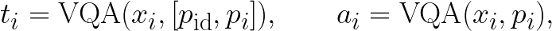
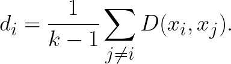
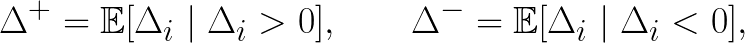
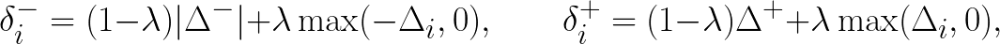
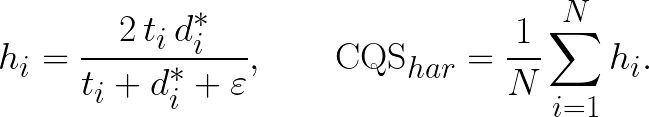

TL;DR: We enable FLUX to generate subject identity-consistent images across diverse text prompts without additional training.
Abstract
Recent text-to-image diffusion models have significantly improved visual quality and text alignment.
However, generating a sequence of images while preserving consistent character identity across diverse scene descriptions remains challenging. Existing methods often struggle with a trade-off between maintaining identity consistency and ensuring per-image prompt alignment.
In this paper, we introduce a novel framework, ASemconsist, that addresses this challenge through selective text embedding modification, enabling explicit semantic control over character identity without sacrificing prompt alignment.
Furthermore, based on our analysis of padding embeddings in FLUX, we propose a semantic control strategy that repurposes padding embeddings as semantic containers.
Additionally, we introduce an adaptive feature-sharing strategy that automatically evaluates textual ambiguity and applies constraints only to the ambiguous identity prompt.
Finally, we propose a unified evaluation protocol, the Consistency Quality Score (CQS), which integrates identity preservation and per-image text alignment into a single comprehensive metric, explicitly capturing performance imbalances between the two metrics. Our framework achieves state-of-the-art performance, effectively overcoming prior trade-offs.
Comparison with existing methods
How dose it work?
Selective text-embedding modification
We selectively modify text embeddings to control identity and per-image semantics, amplifying identity-consistent features while suppressing irrelevant ones.
Additionally, based on our analysis, we repurpose FLUX padding embeddings—dominated by dummy semantics—as semantic containers by injecting meaningful per-image information.
These strategies enable stable identity preservation without sacrificing per-image prompt alignment.
Adaptive feature-sharing
We automatically detect when identity descriptions are ambiguous and apply feature sharing only in those cases.
This adaptive strategy reinforces identity consistency while preserving pose, appearance diversity, and prompt fidelity.
We propose the Consistency Quality Score (CQS), a unified metric that
jointly evaluates the balance between identity preservation and
per-image text alignment.
By measuring both criteria simultaneously within a single score,
CQS enables a comprehensive and reliable ordering of
identity-consistent generation methods.
Given an identity prompt pid and per-image prompts
[p1, …, pk], we generate a set of images
X = {x1, …, xk}, where each image xi reflects its per-image prompt p_i and identity prompt pid. We define two alignment scores:

where ti measures alignment with both the identity and per-image prompts,
and ai measures alignment with the per-image prompt alone.
Identity consistency across the generated images is quantified using DreamSim:

DreamSim scores are transformed using (1−·) and scaled via min–max normalization
to match the range of VQA scores.
To explicitly account for the imbalance between identity consistency and per-image
text alignment, we define the alignment gap
Δi = ai − ti, which measures how much the per-image
alignment deviates from the combined identity–prompt alignment.
We summarize the dataset-level tendency via mean positive and negative gaps,

and define per-sample reward and penalty terms that interpolate between
dataset-level statistics and instance-level deviations:

where λ ∈ [0,1] balances dataset-level and instance-level adjustments.
The adjusted identity score is then given by
where μ, τ ≥ 0 control the strength of penalties and rewards.
The final per-sample score is computed as a harmonic mean:

By integrating identity consistency and per-image text alignment into a single
metric and explicitly penalizing their imbalance, CQShar provides a
balanced, comprehensive criterion for evaluating and ordering identity-consistent
generation methods.